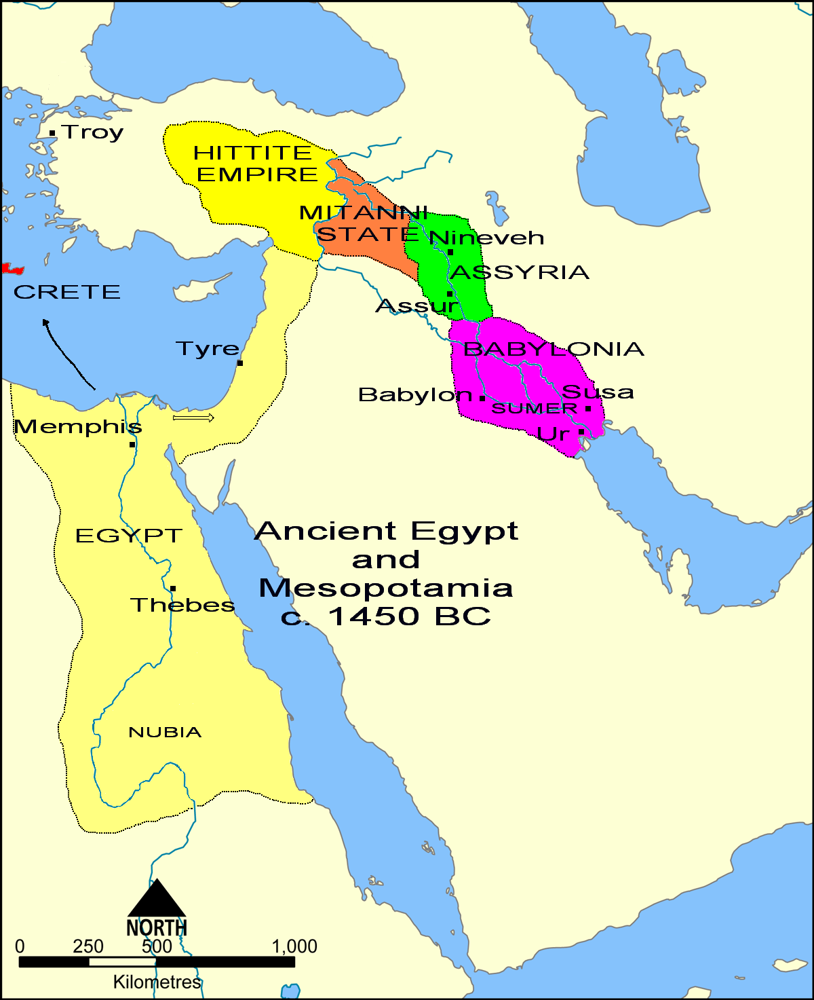

Assyrian vs. Babylonian Empire: A Battle for Mesopotamia
By: Grace
Introduction
For thousands of years, the lands of Mesopotamia were one of the most fiercely contested battlegrounds in human history. The rise and fall of empires in this region shaped the course of civilization, leaving an indelible mark on our collective cultural heritage. Among the most iconic powers of ancient Mesopotamia were the Assyrian and Babylonian Empires, two colossi that dominated the region for centuries. In this article, we will explore the history of these two mighty empires, examining their origins, achievements, and conflicts. Through a careful analysis of archeological evidence, historical accounts, and cultural artifacts, we will chart the course of a long and bloody struggle for supremacy that changed the course of Mesopotamian history forever. From the early years of Assyrian expansion to the fall of Babylon, our exploration of the Assyrian vs. Babylonian Empire is the definitive guide to one of the most fascinating periods in human history. Join us on a journey through time and discover the secrets of even the greatest civilizations.
ad space
Geography and origins
Mesopotamia, a land between two rivers, was the birthplace of ancient Assyrian and Babylonian empires. It is a region that spans the Tigris-Euphrates river system and includes the fertile land between them. Mesopotamia translates to "land of rivers" from Greek and is known as the Cradle of Civilization. The geography and origins of these two empires played a crucial role in their rivalry for dominance in this region.
The Assyrian Empire, originating in the northern part of Mesopotamia, was characterized by a highly militarized society with a thirst for conquest. Their army was highly organized and efficient, which made them an invincible force. On the other hand, the Babylonian Empire, located in southern Mesopotamia, was known for its highly developed agricultural practices and architectural feats, such as the Hanging Gardens of Babylon that are one of the Seven Wonders of the Ancient World.
The geography of each empire also shaped their cultures and strategies during the battle for Mesopotamia. Assyrian rulers relied mainly on military conquest to expand their empire while Babylonian rulers used diplomacy and economic power to maintain their hold on their land. The Assyrians utilized their position on the northern borders of Mesopotamia to protect themselves from invasions while the Babylonians relied on the southern marshes and rivers to fend off any attacks.
In conclusion, the geography and origins of the Assyrian and Babylonian empires played a significant role in the ongoing battle between them for control of Mesopotamia. Both empires drew on their strengths and unique features to shape their strategies and shape their cultures. Despite their differences, both empires left a lasting impact on the region, and their rivalry was a pivotal moment in ancient history.
ad space
Military might
The Assyrian and Babylonian empires were two of the most prominent civilizations in ancient Mesopotamia. These two superpowers were often at war, each vying for control over the fertile crescent. While both empires had impressive economic and cultural advancements, their military prowess was their greatest strength. The Assyrians and Babylonians both had highly effective armies that helped them expand their territories, but the key to their success was their unique military tactics and technologies.
The Assyrian Empire was renowned for its highly organized military, which was composed of well-trained soldiers and a formidable chariot corps. The Assyrians also made use of advanced technologies such as bronze weapons, siege equipment, and composite bows. They were skilled in the art of siege warfare, and their use of innovative military tactics such as the use of mobile towers and battering rams made them a formidable force.
On the other hand, the Babylonian Empire had a highly disciplined standing army that was made up of professional soldiers. The Babylonians had sophisticated technologies such as iron weapons, and they developed innovative methods for fortifying their cities. Their army utilized battering rams and mobile siege towers, which they used to great effect.
The Assyrian and Babylonian empires were in a constant state of conflict, and each civilization was determined to outdo the other. They both had highly effective military strategies, but the Assyrians were known for their ruthlessness and cruelty. They were known to take no prisoners and would often execute entire populations of conquered cities. The Babylonians, however, were more merciful in their conquests, and they allowed conquered peoples to keep their own customs and traditions.
In the end, the Assyrian Empire fell to the Babylonians in 612 BCE after a series of devastating battles. While the Babylonians may have won the battle for Mesopotamia, the military might and advancements of both these empires had a lasting impact on the region's history and culture.
ad space
Art and culture
Mesopotamia has long been a site of rich artistic and cultural expression, and this was especially true during the time of the Assyrian and Babylonian empires. While these two empires were bitter rivals in many ways, they also influenced each other's art and culture, creating a fascinating and complex tapestry of artistic and cultural expression that has captured the imaginations of scholars and enthusiasts alike for centuries.
One of the most striking things about the art and culture of these two great empires is the way in which they both drew upon the traditions and motifs of earlier Mesopotamian cultures while also innovating and developing new artistic forms and ideas. For example, both the Assyrians and Babylonians were known for their intricate and detailed reliefs and sculptures, which often depicted scenes from mythological and historical narratives. However, each empire also put its own unique spin on these forms, with the Assyrians favoring bold, dynamic, and often brutal depictions of war and conquest, while the Babylonians tended to focus more on themes of peace, prosperity, and order.
Another fascinating aspect of the art and culture of these empires was the way in which they both served as centers of cultural exchange and innovation. For example, the Assyrian empire was known for its policy of deporting conquered peoples to other parts of the empire, which led to a rich and diverse cultural melting pot. Similarly, the Babylonian empire was famous for attracting scholars, artists, and intellectuals from throughout the ancient Near East, who flocked to its cities in search of wealth, patronage, and new ideas.
All in all, the art and culture of the Assyrian and Babylonian empires offer a fascinating glimpse into the artistic and cultural landscape of ancient Mesopotamia. From their intricate and beautiful reliefs and sculptures to their vibrant and diverse literary traditions, these two great empires continue to captivate and inspire us with their artistic and cultural legacy.
ad space
Decline and fall
The Rise and Fall of Empires: Exploring the Assyrian vs. Babylonian Conflict
Ancient Mesopotamia was a region of great power struggles, and the Assyrian and Babylonian empires were two of its fiercest competitors. Both empires left a lasting impression on the region's history, forging a legacy that influenced the development of the region for centuries. In this article, we explore the decline and fall of these two great empires, tracing the factors that contributed to their downfall and examining the lasting impact of their rivalry.
The decline of the Assyrian Empire was marked by a series of internal conflicts and external pressures. One of the most significant factors was a string of weak rulers who were unable to maintain control over the vast empire. This led to rebellion in the provinces and the rise of local leaders who challenged the central authority. These factors, along with a devastating famine and a poorly-managed military campaign, ultimately led to the empire's collapse.
Meanwhile, the Babylonian Empire rose to fill the power vacuum left by the Assyrians. Under the leadership of Nebuchadnezzar II, the Babylonians constructed monumental structures and developed a sophisticated legal system that became the foundation of later cultures. However, internal struggles and external pressures, such as invasions from the Persian Empire, eventually led to the collapse of the Babylonian Empire as well.
The rivalry between these two empires left a lasting impression on the region's history. The Assyrians' brutal tactics and aggressive expansionism were met with resistance from the Babylonians, who portrayed themselves as a more benevolent and just empire. This rivalry was a driving force behind the development of the region and led to a lasting cultural legacy that influenced the development of Mesopotamia for centuries to come.
Explore more about the rich history of ancient Mesopotamia and the rise and fall of its great empires. Discover the fascinating stories of powerful rulers, grand armies, and great battles that shaped the region and its legacy.
ad space
Conclusion
After analyzing the historical context, political structure, and cultural legacy of the Assyrian and Babylonian empires, it is clear that both civilizations played a pivotal role in shaping the course of Mesopotamian history. While the two empires were bitter rivals, battling for supremacy in the fertile crescent, their impact on ancient Near Eastern civilization cannot be denied.
The Assyrian Empire, led by fierce warriors and innovative rulers, managed to conquer a vast territory that included modern-day Iraq, Syria, Lebanon, and parts of Iran. Despite their reputation for cruelty and barbarism, the Assyrians also introduced new technologies, such as the use of iron weapons, and built impressive public works, including palaces, aqueducts, and libraries.
In contrast, the Babylonian Empire, which emerged following the fall of the Assyrians, was renowned for its intellectual achievements, including the development of the first written legal code, the creation of sophisticated mathematical systems, and the construction of the iconic Hanging Gardens of Babylon. Under the legendary king Nebuchadnezzar, Babylon became a center of trade, religion, and art, attracting scholars, traders, and craftsmen from all over the Near East.
Despite their differences, both empires left an indelible mark on Mesopotamian civilization, influencing subsequent empires, such as the Persians, Greeks, and Romans. Their legacy can be seen in the art, literature, religion, and philosophy of modern-day Iraq and the wider Middle East.
In conclusion, while the Assyrian and Babylonian empires may have been rivals, their contributions to Mesopotamian civilization were equally significant. By studying their rise and fall, we can gain a deeper understanding of the complexities of ancient Near Eastern politics, culture, and society, and appreciate the enduring impact of their legacy on our world today.
ad space